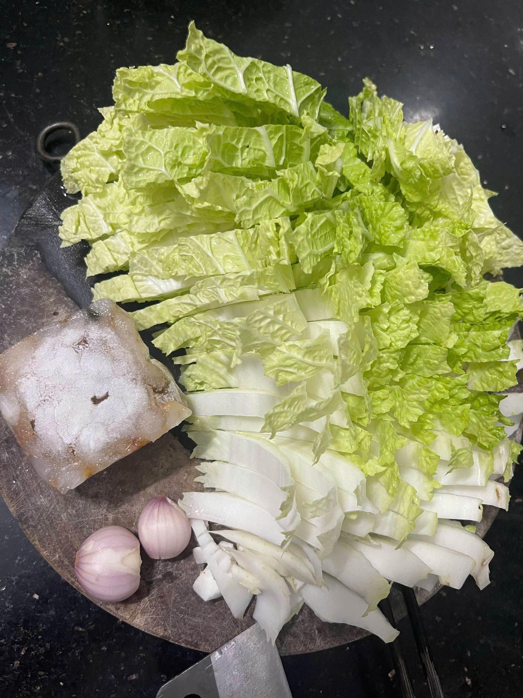

Canh Rau Cải Thảo Nấu Tôm
1. Giới Thiệu Món Ăn
Nguồn gốc: Canh rau cải thảo nấu tôm là món canh thanh mát, phổ biến trong các mâm cơm gia đình Việt, mang lại cảm giác dễ chịu và giải nhiệt.
Tác dụng: Giúp bổ sung lượng nước, làm thanh mát cơ thể, hỗ trợ tiêu hóa tốt và cung cấp đầy đủ vitamin cho bữa ăn.
Chất dinh dưỡng cung cấp: Giàu chất xơ, vitamin C, A từ cải thảo kết hợp với hàm lượng protein và canxi lành mạnh từ tôm tươi.
2. Nguyên Liệu Chuẩn Bị
- Rau cải thảo (rửa sạch, cắt nhỏ vừa ăn)
- Tôm tươi (bóc vỏ, làm sạch)
- Hành củ (hành tím băm nhuyễn)
- Gia vị: Muối, hạt nêm, tiêu, mỡ lợn...
3. Các Bước Thực Hiện
Bước 1: Chuẩn bị nguyên liệu
Sơ chế sạch tôm, băm hành củ và cắt nhỏ rau cải thảo để chuẩn bị sẵn sàng cho quá trình nấu.

Bước 2: Xào tôm và nấu canh
Đảo đều tôm và hành củ với chút mỡ lợn. Khi hành dậy mùi thơm và tôm săn lại, cho rau cải thảo vào xào cùng. Khi rau hơi mềm, đổ nước vào đun sôi bùng lên trong khoảng 3 phút rồi nêm nếm lại gia vị vừa ăn.
Thành Phẩm Hoàn Thành
Bát canh rau cải thảo nấu tôm ngọt thanh tự nhiên từ tôm tươi, vị giòn ngọt nhẹ của cải thảo thơm mùi hành phi rất hấp dẫn cho bữa cơm gia đình.